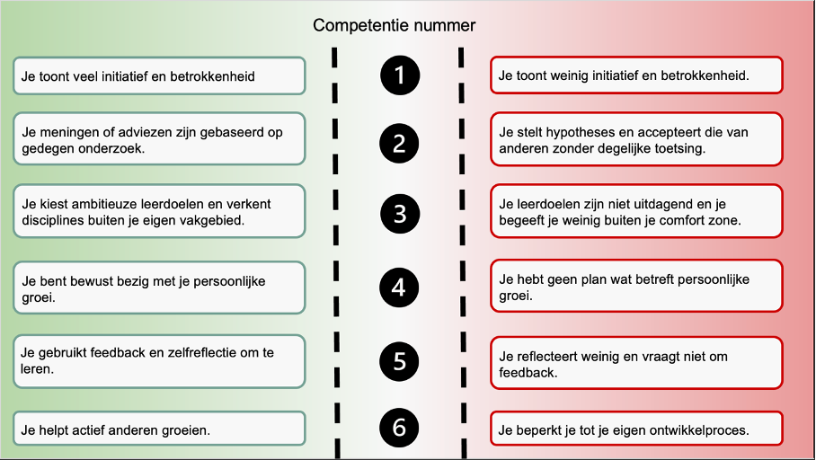

Smart me
leerdoelen (competentie 5)
Aan het eind van deze minor wil ik beter de koppeling kunnen zien/maken/overbrengen
tussen de technische aspecten die vallen onder de 4e industriële revolutie en de business kant.
S: de vertalende persoon kunnen zijn tussen de technische afdelingen en de managing afdelingen
M: aan het eind van deze minor staat er een advies rapport die begrepen kan worden door beide afdelingen. Zonder dat deze te simpel en oppervlakkig wordt voor een andere afdeling
A: met de toekomstige ontwikkelingen van de 4e industriële revolutie gaat dit relevant zijn
R: door de werkzaamheden van deze minor met verschillende disciplines, en het lopende project waar een advies rapport uit komt.
T: einde van huidige minor
Wat betreft mijn eerste leerdoel vind ik dat ik deze succesvol heb afgerond. Op de eerste plek weet ik veel maar rondom dit onderwerp dan bij de start van deze minor.
Dit gaat dan over de onderwerpen welke technieken zijn er en hoe kunnen ze worden ingezet. Als bedrijfskundige denk ik dat ik hier nu de brug kan zijn tussen de techniek en de business.
Hierbij kan ik rekening houden met de belangen vanuit de technische afdeling, als van het management.
Assertiever naar mijzelf zijn, zodat ik mezelf niet in de weg zit bij het uitvoeren bij opdrachten. Dit kan vorm aannemen door eerder er mee aan de slag te gaan.
Of eerder hulp vragen/ opzoeken.
S: ik wil voorkomen dat ik mijzelf in de weg zit als gevolg van niet assertief opgesteld genoeg zijn geweest.
M: aan het eind van een gevoerd gesprek is voor mij alle besproken informatie duidelijk of heb ik stappen genomen om het proberen te begrijpen
A: voor toekomstige functies gaat dit mij een efficiënter persoon maken
R: tijdens het uitvoeren van dit gesprek gaat het voorkomen dat er onderwerpen aan bod komen waar ik nog niet veel van af weet. Hier moet ik mij assertief opstellen om meer kennis hiervan op te doen.
T: einde van huidige minor
Wat betreft mijn tweede leerdoel vind ik het lastiger om te beoordelen of ik deze geslaagd vind afgerond. Dit is een leerdoel waar ik al langer aan werk, en hierbij denk ik dat deze op zichzelf nooit volledig is afgerond.
Rond assertiviteit kan je altijd blijven ontwikkelen om dit te doen, en ook om dit beter te doen.
Binnen deze minor denk ik wel dat ik op het vlak van vragen stellen ben geslaagd.
Bij onduidelijkheden, voornamelijk binnen het project, ging ik vragen stellen. Omdat dit over onderwerpen ging waar ik nagenoeg niks over wist was dit ook wel nodig.
Ik moest dan vragen over bepaalde termen of technieken.
Echter zit ik rondom dit leerdoel wel nog in conflict met mijzelf. Qua initiatief nemen vind ik nog altijd dat ik hier beter in kan zijn. Het conflict zit hem dan ook voornamelijk in dat als bedrijfskundige misschien de leiding van de groep had moeten nemen. Nu is deze rol vervuld door iemand anders binnen de groep. Op zo’n momenten denk ik te snel dat ik het wel prima vind zo.
Ik vond het fijn dat we binnen de projectgroep een moment hadden gepland om te hebben over onze leerdoelen. Hier lieten we elkaar weten wat onze leerdoelen zijn. Daarbij vroegen we elkaar af hoe we elkaar hierbij kunnen ondersteunen, en of die persoon ons nodig had bij zijn eigen leerdoel. Dit resulteerde dat we elkaar op bepaalde gebieden extra ruimte gaven voor een bepaald leerdoel (competentie 6)